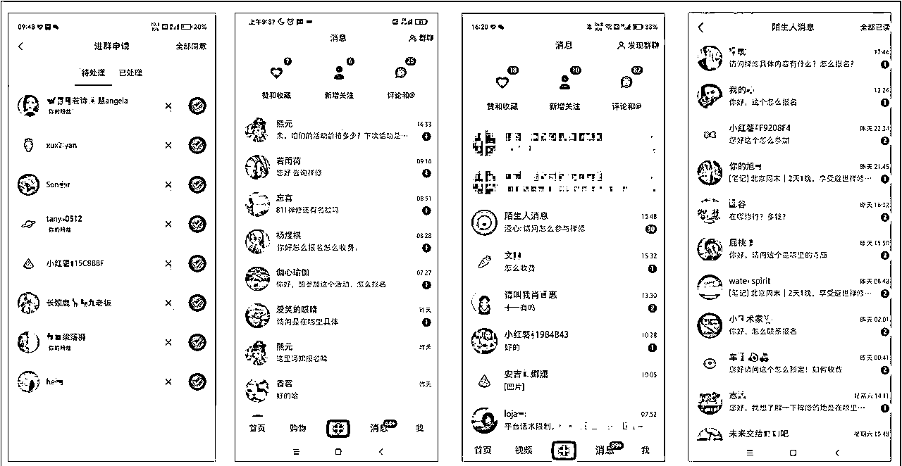
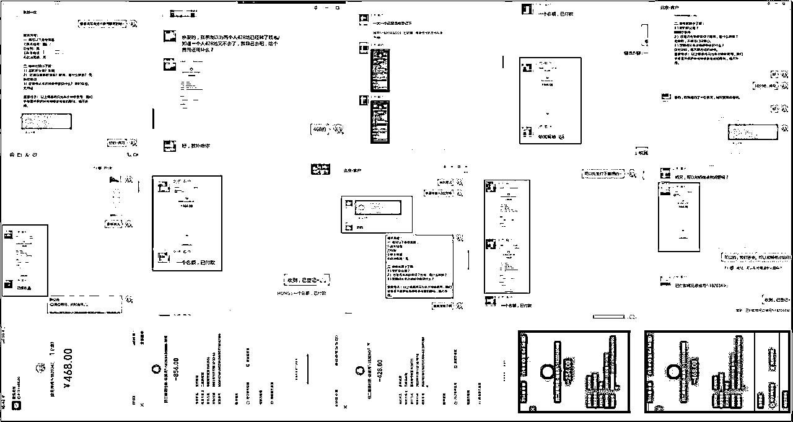
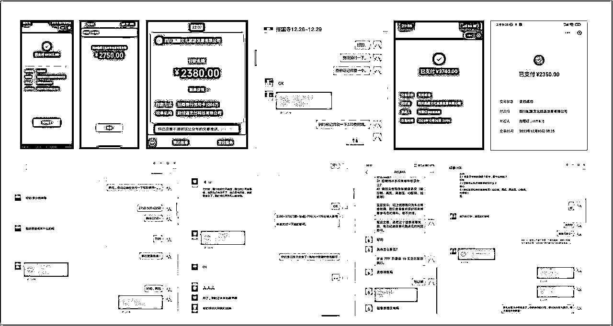
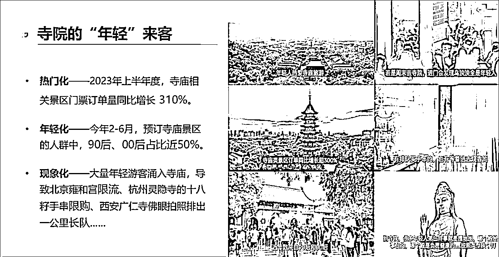
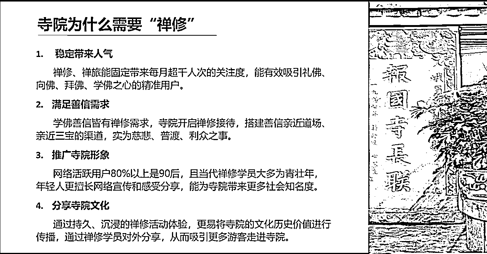
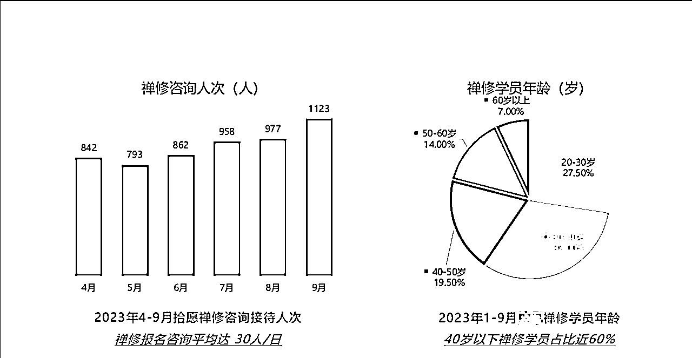
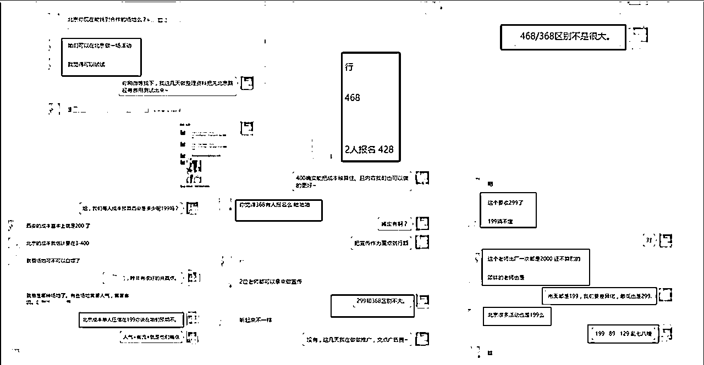
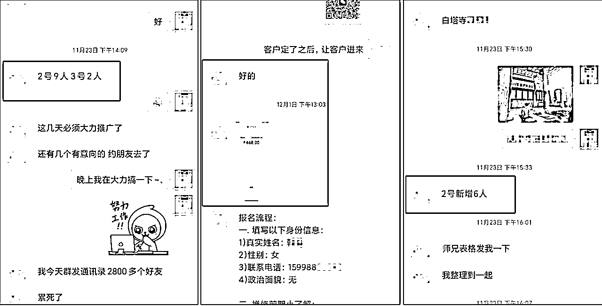
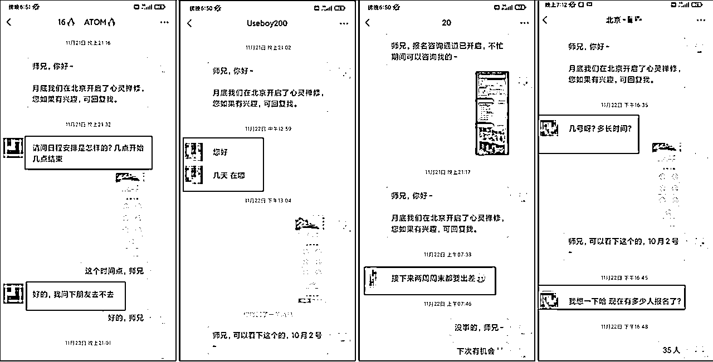

来源：https://b3k2jeijqy.feishu.cn/docx/IC2WdG8KnoZbqNxDq0wcdBG1nHg
大家好我是拾月，11月份我在生财社群分享过一篇关于30天在小红书做禅旅引流变现5W+的文章，包括一些谈单的技巧、有兴趣的圈友可以看看， 。
通过上次做禅旅的经验，给这次我们团队带来了非常成功的案例小红书精准引流200+，成功变现7W+的案例分享，下面我给大家展示下我们当时数据图与成交记录。



随着今年疫情放开，旅游业也在报复性增长，同时寺庙游也成功推上了热搜（上班和上进之间选择了上香，做题与作弊之间选择了做法），这虽然是一句网络梗，但直面说明现在年轻人压力有多大。
在互联网的普及下，时间变的快速起来人们注意力不再那么的集中，一直想找个清静的地方让自己静修一段时间，从而就推动了禅修商业的发展、下面给大家展示一些我们团队总结出来的，数据图与一些真实的客户调研。



2.产品规划
寺庙游，这里其实大家都已经知道了，那么如何把寺庙禅修搬入到城市、这就是我们正在研究的方向、当时我们也是没有具体的方向、于是抱着先行尝试搞一场活动测试一下。
第一步城市的选择、北京上海广州这3大城市作为首选，主要是因为消费能力可观后来选定了北京，不是说上海广州不好、主要是北京这边有很多资源可以调用、再加上我人又在北京、其他城市不是很占优势。
粗略定了下时间，10月底我们开始陆续策划与改稿，开营时间定在了11.25号预计人数为40人。
最终交付人数达到68人结果是超出我们预期，当时在策划活动时候遇到很多纠结点，下面我分几部分讲述下。
01.寺院师傅怎么找：
这个痛点肯定也是很多人无法来解决的，因为占据整个活动核心，如果你想做“都市禅修活动”直接去寺院找师傅，可能连人都找不见，又或者师傅根本不会出来、这就涉及核心问题就是信任、这里分享2个沟通技巧。
全方位的依靠熟人这个很关键，在熟人引荐下来拜访师傅，前期第一次拜见时不要带有任何商业目的，就单纯的拜访即可第二次去拜访师傅可以适当说一下目的，注意一定不要很功利心，如果师傅有一点意愿那么基本没啥问题。
站在推广寺院的角度来沟通，举个例子（现在有很多寺院都有禅修营，祈福周边等），他们有很多志工可以去公众号官方渠道添加上他们，帮他们售卖一些产品哪怕利润低调，目的就是建立前期信任。
02.活动方案怎么做
【方案一：两天一晚】考虑复制之前旅修的路径做2天一夜收费为高客单价、但是市场调研途中遇到几个问题、费用过高没有一定的用户积累，很难有转化，民宿+寺院+活动3者无法结合在一起再加上成本高出预算，当时就拒绝了这套方案。
【方案二：一天活动】对比与前套方案来说可行度较高，后来因为午餐素食客单价超出理想预期，14-20/人我们预算区间、场地方给出的报价是80-100，这已经远远超出我们的标准，只好重新制定方案。
【方案三：半天活动】住宿与午餐问题无法解决，那么我们就避开这个环节换个时间节点，想办法来做超预期交付，当时排布了一下时间顺序，下午13:00 — 18:00这个时间阶段刚刚好也不短也不长，如果活动时间较长可以延迟2小时、这个方案与预算和收入对比综合度比配较高。
价格方面还是本次活动挺重要的一部分，定的低了我们没有利润而且还赔钱、定的高了转化低活动无法举行。
如何定价其实是通过3方面综合考虑的，第一（人群定位与后期转化）、第二（市面竞争对手价格是多少）、第三（核心竞争力定价）。
第一次定价没做任何调研之类，说白了就是一股脑定下的价格为199，后来一核算成本结果是赔钱状态所以直接就否定了。
第二次与西安团队讨论后，他们价格268才能覆盖成本，我们定价为368但是没啥利润。
第三次针对市场竞品调研，价格在360以下的团队居多竞争也大，后来我们决定468位刚刚好，也可筛选一些高净值用户，方便与我们后期做转化。
给大家看下当时我们定价从199、268、368、最终468/位作为本次活动的基础价格沟通记录。

当时价格包括日期已经确定下来之后，剩余其实重点在流量上、在流量策略上我们采用的3种方式进行操作、公域小红书、私域朋友圈私信、代理分销、下面详细和大家分享这3种方式。
01.小红书
流量其实没有特别多技巧，原因是啥、前期账号沉淀与对用户的了解、在10月底我们就开始发布招募活动的笔记内容、无非就是咨询、引流、至于流量如何做爆，其实对我们当时意义不是很大、差不多20天左右，引流200多人、途中单个账号“限流一次”、后期转化30多人。
更多小红书运营相关的建议可以看这下这篇文章https://t.zsxq.com/15yt4pKjg。
02.代理分销
我们产品线其实较多，单凭自己账号发布、人手之类根本是忙不过来、于是我这边成立分销团队，至于他们在内容上如何运作、这点不是非常清楚、11月15给出代理活动、截止月底、成交18人左右。
可能大家比较疑虑我们分销商都是从哪里找到的，首先我们分为几部分组成（老客户推荐、同行推荐、创业者 ）。
老客户一般都维护较好，比如很多做瑜伽疗愈老师，参加完禅修课程之后都愿意推荐朋友顺带挣个代理分销。
同行推荐这是最基本的，在小红书或者其它线下渠道多添加点同赛道不同活动的团队，时间一长就都是朋友。
目前有很多创业者在寻找合适的项目，都会主动联系你就比我我刚开始，也是一步一步从分销开始开始搭建自己团队。

03.私信沟通
为什么不直接说私信不说朋友圈呢，其实朋友圈无法直接带来转化、即使你的客户看到了、也不会私信你或者给你留言、朋友圈的目的是给客户留个印象。
在你发布朋友圈的结束之后，一定要私信回复你在活动当地的客户，也许当时他在忙、但是等他忙完之后、一般都会回复你， 只要活动那天她有时间，参加报名的概率非常的大，通过私信沟通、我们转化差不多有15人左右。
这里强调一点，客户在引流到微信的时候，如果你没有足够多的活动可以让用户立刻转化的情况下，那么请建议你先把客户放入你统一的流量池中，统一群里预热发售。

如何来转化其实这都是有一些技巧的，这里来和大家分享下我们的技巧，当时有2个精准用户群里，差不多200人左右每个100，预计是在11月18号左右开始集中转化。
在转化之前安排几个自己人在群里进行提前预热，时间控制当天上午开始（群里就陆续发布提前编辑的好的话术例如什么时候开始报名之类的）另外一点就是在我们发布公告之后。
所有下单截图我们都会发布至群里，这样的作用是非常有明显就和评论区一样，只要有一个人评论那么就会有很多人一起重复他的动作，这就是从众心理。
交付环节其实还是比较头疼的，由于当天参加人数一共是38人，因为有一部分是我们老客户，这类人群目的性很强，就是找师傅在一起聊聊天、所以我们2号当天开设了2个场地、一部分是初级体验，另外一部分是VIP客户体验，这样也可以有效的分流客户，从而可以让客户深度体验。
下面重点回顾几个当时我们遇到的问题、我分为几个片段来做分享！
师资力量 摄影跟拍 活动室内 活动室外
01.师资力量
这方面其实在目前看是我们最大的优势，当时由于是禅修和疗愈在一起结合、有考虑过在北京当地来沟通师资、因为是第一次担心很多师傅没有基础信任感、后来就否决了、还是邀请我们这边团队内部资源、聘请（彭州佛林寺弘法利生会副会长”与“加拿大大觉精舍国际颂钵师”2位老师做交付）。
02.摄影跟拍
素材还是比较重要的，当时打算邀请我们同事跟拍，结果我们同事那几天正好阳了、后来考虑叫合作摄影过来跟拍，差旅费计算了下严重超标。
这里和大家说下为什么要找专业的摄影来跟拍呢，首先第一点我们要求的是多机位与固定机位摄影，如果是个人爱好摄影，没有那么的机器可以使用，还有一点在效率上也是会有很大差异。
确定之后就开始联系摄影团队，我自己本身有一些摄影圈子，和他们联系了一下搞了搞价格、从2600-搞价到1600多机位双拍摄、6小时这个还是比较有性价比且又是熟人，在沟通起来比较方便。
03.室内场地
针对活动当天我们这样来安排的，分为接引、签到、沐手、主持人等5位师兄组成、在人手方面我们是不缺的、但是准备的再充分，也肯定会有遇到很多突发的情况。
当时在协调场地时候，忽略了这个空间是否有空调问题，在我提前布置当地时，结果是没有空调的、当时去借了3个暖风机，做禅修室内温度是可以的，但是做疗愈温度还是不够，又继续和场地方协调点燃壁炉给室内取暖，这才解决温度问题。
04.室外场地
在解决掉一些室内情况后，以为活动就按照时间顺序正常进行即可，正当进度为疗愈活动的同时、园区施工队在我们门口开始做园林维护，会有杂音印象体验效果，这时候在出去继续和师傅们沟通，师兄都也比较好说话、先不来打扰我们了，这里非常感谢当时的师傅。
这次营利分为了3种方式、门票 祈福卡 禅修营，门票就不说了，前面有介绍过，这里说下祈福和与禅修如何来做转化。
祈福：
这个其实是我们单独的一个产品链路，在抄经结束之后、我们志工会统一介绍祈福产品、这个对外售价是298，针对这次禅修参加者为198、内容包含学业、事业、家庭、姻缘、健康、财运6大交付路径，来帮助客户解决路途遥远问题，很多客户觉得有趣，但是肯定还有很多客户跟随大众一起来购买的，祈福产品售卖有28份。
禅修：
活动举办结束之后不是就没事了，后续需要做客户反馈、只有真正参加过师兄，才能给出最理想的数据，而且还可以和客户建立深度的信任关系方便与后期的优化，经过几天沟通差不多有10人报名了12月-1月的禅修活动。
刚开始去找师傅或者同行合作切记不要功利心很强这样会适得其反，先了解合作的对象是否有痛点顺带帮其解决最终达到共赢。
如果是考虑自己做活动，那么能把自己身边资源最大化是最好，比如你做疗愈几十人的活动单说瑜伽垫就得大几千，身边有这方面同行直接互相借一下即可节省一大比开支。
在与场地方合作同时，一定要找配合度很高的人合作，因为你前期准备在怎么完美在活动同时也会出现突发情况，场地方可以帮你规避很多不必要的麻烦。
把客户当朋友，在专业的角度下用温度来提升转化效果，通过时间积累后期与客户能达成跨领域项目合作。
在做转化的同时一定要把退费机制提前做好，这样可提升转化率同样也不会得罪客户与影响口碑。
各位师兄我的分享就先到这里了，最后咱们在说下今年文旅很多小众赛道都非常的好做，尤其是现在客户对新鲜事物接受能力非常多的强，这就是我们的机会，如果你想做此类型赛道并且有一定的资源就是不知道如何对接、那可以随时与我交流。
还有一点你如果流量能力很强并且对我们项目产品有所兴趣，欢迎找我一起合作、于此同时我们也在努力不断的开发新的产品、比如禅修结业证书、轻断食禅修文旅、路游禅修文旅、寺院文创IP开发等一些商品。
这里非常各位师兄拿出宝贵时间观看到结尾、谢谢......